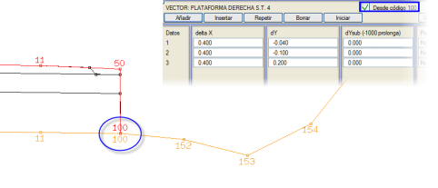
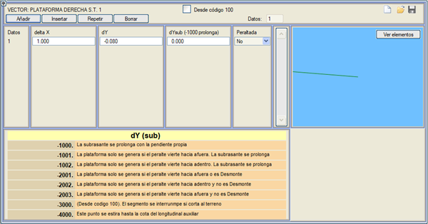
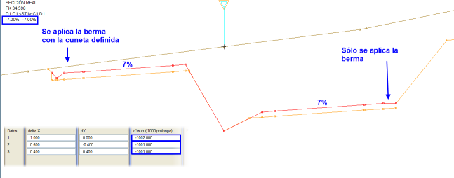
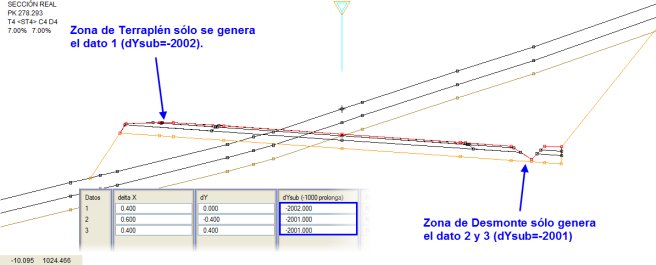
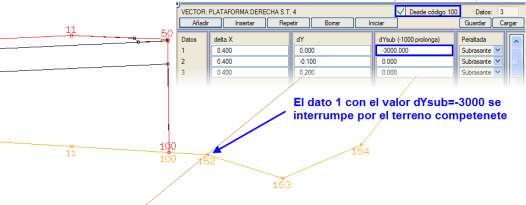
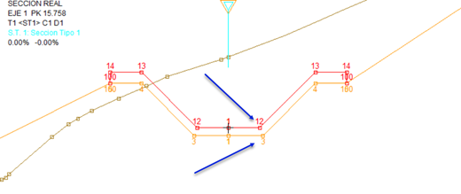
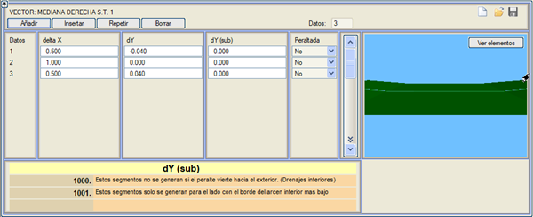
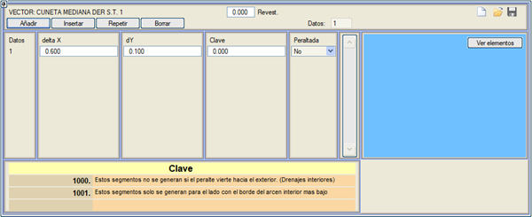
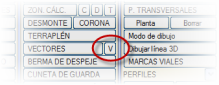

| |
|
SABİT GEOMETRİ VEKTÖRLERİ
|
5 tip sabit vektör uygulamak mümkündür, yani kesitin yarma veya dolgu olmasına bakılmaksızın uygulanan ve ayrıca araziyle kesişirlerse kırpılmayan vektörler.  Sabit Platform
Sabit Refüj Uygun Olmayan Zeminde Yarma Refüj Hendeği Sabit Terasman Vektörlerin Bağımsız Bölümlendirilmesi Sabit Platform Bu menü, her tip kesit için ve dever kanunlarından bağımsız olarak platformu sabit elemanlarla tamamlamaya olanak tanır. Bu elemanlar bordürler, yaya kaldırımları, yan basamaklar, duvarcıklar vb. olabilir. SABİT PLATFORM tipi elemanlar varsa, program bunları palyeden önce son yardımcı platformun arkasına yerleştirir (yarma/dolgu kararını vermeden önce). Platformun sabit kısmının tanımı, o kesit bölümünün vektörel tasarımını gerektirir. Sabit platformun kırmızı kotu, kırmızı kotun ucundan ve sabit platformun terasman tanımı (kazı) terasmandan başlar. Kontrol noktası/hendek'i, hendeğin terasman drenajından veya bir seçme malzeme katmanından sarktığı kesitler için 100 kodundan itibaren kutucuğundan başlayarak, dX, dY ile tanımlanan bu vektörel platform, hem yarma hem de dolgu kesitlerinde bu noktadan (kod 100) oluşturulur ve kontrol noktasını veya hendek başlangıcını veya dolgu kesitinin başlangıcını vektörün son noktasına taşır. 
Vektörel tanım içine girdikten sonra, dYalt sütununun, sabit platformun altındaki terasman (kazı) profilini oluşturan segmentleri tanımlamaya olanak tanıdığını unutmamak gerekir. Her durumda, terasman, sabit terasman şeklinde vektörel olarak da tanımlanabilir). Eğer dYalt değeri, terasmanın kırmızı kotu aşması için yeterince büyük yapılırsa, program uygulandığında onu kırmızı kot yüksekliğinde durdurur ve böylece o noktada üstyapı katman paketinin kalınlığını ortadan kaldırır. Eğer dYalt=-1000 yapılırsa, terasman, son yardımcı platformun altındaki terasmanın getirdiği eğimle uzatılır. 
Sabit platformda, dever dışa doğru aktığında oluşturulan segmentler, dY(alt) sütununa -1001 değeri konularak ve dışa doğru akmadığında oluşturulan segmentler, dY(alt) sütununa -1002 değeri konularak tanımlanabilir. Bir örnek görelim: Dever dışa doğru aktığında platformun kenarına bir hendek koymak ve aksi takdirde bir metrelik bir palye yerleştirmek istiyoruz. O zaman aşağıdaki parametreleri tanımlarız: 
dYalt sütunu için diğer tamamlayıcı kodlar -2001, -2002 ve -2003'tür. Sabit platformda, yalnızca dever dışa doğru aktığında (dYalt= -2001) veya o tarafta yarma olduğunda oluşturulacak segmentler tanımlanabilir. Segmentler yalnızca dışa doğru akmadığında (dYalt= -2002) ve o tarafta yarma olmadığında oluşturulacaktır. Bir örnek görelim: 
Platform 100 kodundan itibaren (daha önce bahsedilen) durumlar için, dYalt sütununun segmentine -3000 değeri uygulandığında, söz konusu segment, araziyle kesişirse arazi tarafından kesilecektir. Ardından başka segmentler eklenebilir. Bir örnek görelim: 
Bu vektör ayrıca aşağıdaki seçenekleri de içerir:
Eğer -4000 kodu atanırsa, bu noktanın yardımcı boykesitin kotunu alması gerektiğini belirtir (eğer dY=0 ise). Aynı şekilde, alt kot vektöründe, bir noktaya aynı anahtar -4000 ile, bu noktaya yardımcı boykesite uygulanmış olan aynı kot artışının uygulanacağını belirtilebilir.  Örneğin, basamaklı trapez kanalların tasarımında uygulanabilir. Sabit Refüj Otoyol durumunda, refüjün bir kısmını vektörel olarak tanımlama imkanı da vardır: Bu, SABİT REFÜJ olarak adlandırılır. Bu durumda vektör, yardımcı platformun iç kenarından ve her iki platformun iç kaplama palyesinden önce asılıdır.  Refüjün toplam genişliği korunur, bu nedenle sabit refüjü tanımlayan her bir vektörün genişlikleri, [EKSANTRİKLİK VE REFÜJ] menüsünde tanımlanan yarı refüjden daha küçük bir değere sahip olmalıdır. Vektörün son noktasından sonra, refüj, refüjün tepe noktasına kadar bir segmentle otomatik olarak tamamlanır. Sabit refüjlerden birinin yarı refüjde verilen genişlikten daha büyük bir genişliğe sahip olmasına ve geometrik ekseni geçmesine de izin verilir; bu durumda, iki vektörün uçları veya geçen vektörün ucu karşı tarafın palyesiyle doğrudan birleştirilir. Vektörün segmentleri deverli olabilir. Eğer vektörel tanımın dY (alt) sütunundaki tüm veriler bir değere sahipse, o zaman terasman otomatik davranışına devam eder. Eğer veriler tanımlanırsa, bunlar terasmanın ucundan itibaren uygulanır. Bu sütun ayrıca iki özel değeri de kabul eder: 1000: bu değere sahip segmentler, o tarafın platform deveri dışarıya doğru akıyorsa oluşturulmaz. 1001: bu değere sahip segmentler yalnızca iç banket kenarı daha alçak olan taraf için oluşturulur. Uygun Olmayan Zeminde Yarma Eğer burada tanımlanmış bir vektör varsa ve ilişkili kesimde bitkisel toprak ve/veya uygun olmayan zemin varsa, program yarma ve dolgu geometrisini sağlam zemin jeolojik katmanına kadar götürür ve o noktadan itibaren burada tanımlanan geometriyi kullanarak yüzeye kadar çıkar. Yarma durumunda profil yüzeye kadar devam eder; dolgu durumunda, dolgu şevi bitkisel veya uygun olmayan zeminin tabanına kadar iner ve bu vektörün geometrisiyle yüzeye geri döner. Refüj Hendeği SABİT REFÜJ'e benzer şekilde, REFÜJ HENDEĞİ, refüjün sabit bir kısmını tanımlamaya olanak tanır, ancak bu durumda vektörler refüjün tepe noktasından dışarıya doğru asılıdır. Bu tepe noktası, derinlikle tanımlanan refüjlerde ve merkezlenmiş maksimum şevli ve merkezlenmiş minimum şevli refüjlerde geometrik eksenle çakışır; buna karşılık, şev ve maksimum şevle tanımlananlar için tepe noktasının konumu, tanımlanan şevlere, refüj hendeğinin geometrisine ve devere bağlı olacaktır. Bazı segmentlerinin deverli olmasına izin verir. Bu menüden tanımlanan refüj için bir kaplama tanımlanabilir. 
Ayrıca, belirli hendek segmentlerine birkaç anahtar da tanımlanabilir: 1000: bu anahtara sahip segmentler, o tarafın platform deveri dışarıya doğru akıyorsa oluşturulmaz. Bu şekilde, bu segmentlerle, daha yüksek platformun kurplarının içinde drenaj için hendekler tanımlanabilir. 1001: bu anahtara sahip segmentler yalnızca iç banket kenarı daha alçak olan taraf için oluşturulur. Sabit Terasman Sabit platformun terasmanı için, sabit platform vektörü için tanımlananlardan bağımsız eksen mesafeleri ve kotları ile bir vektör tanımlamaya olanak tanır. Sabit terasman vektörü, her nokta için bir anahtar tanımlama imkanına sahiptir. Anahtar değeri 1 olan noktalar için, program noktanın kotunu ilgili tarafın hendek boykesitinin kotuyla değiştirir. Deverli kutucuğu etkinleştirilmiş olan segmentler deverle birlikte dönecektir. Böylece, örneğin, yarı-yatay segmentlerin dönmesi ve yarı-dikey segmentlerin dönmemesi sağlanabilir. Dolgu kesitlerinde, banket kenarı/palye kenarı kontrolü ile, dolgu şevinin altında, zemini kesene kadar eşlik eden bir terasman vektörü tanımlanabilir ve ardından dolgu şev dibine kadar zemin boyunca kapanabilir. Bu terasman vektörünün zemini kesebilecek segmentlerine -3000 anahtarı atanacaktır. Vektörlerin Bağımsız Bölümlendirilmesi Program, hendekler, yarmalar ve dolgular için alt bölümlendirmeye benzer şekilde ([H], [Y] ve [D] düğmeleri) VEKTÖRLERİN (sabit platform, sabit refüj, uygun olmayan zeminde yarma, refüj hendeği ve sabit terasman) ayrı bir bölümlendirilmesine olanak tanır. Bu bölümlendirmeye erişmek için [V] tuşuna basılır. Vektörlerin bağımsız bölümlendirilmesi için aşağıdaki davranış izlenir: Eğer bir bölüm, bir sonrakinin başladığı aynı KM'de biterse ve o arazi enkesiti mevcutsa veya hesaplama bölümlerinin KM'lerinde enkesit enterpolasyonu etkinleştirilmişse, o zaman enkesit, genel HESAP BÖLGELERİ'nin KM'leriyle yapıldığı gibi, iki bölüme karşılık gelen veriler kullanılarak tekrarlanır. |